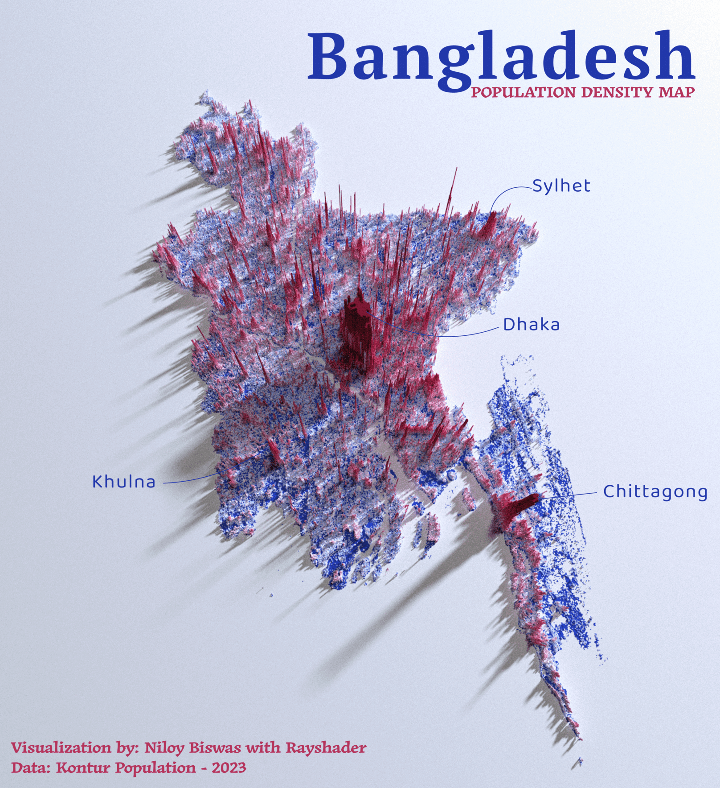
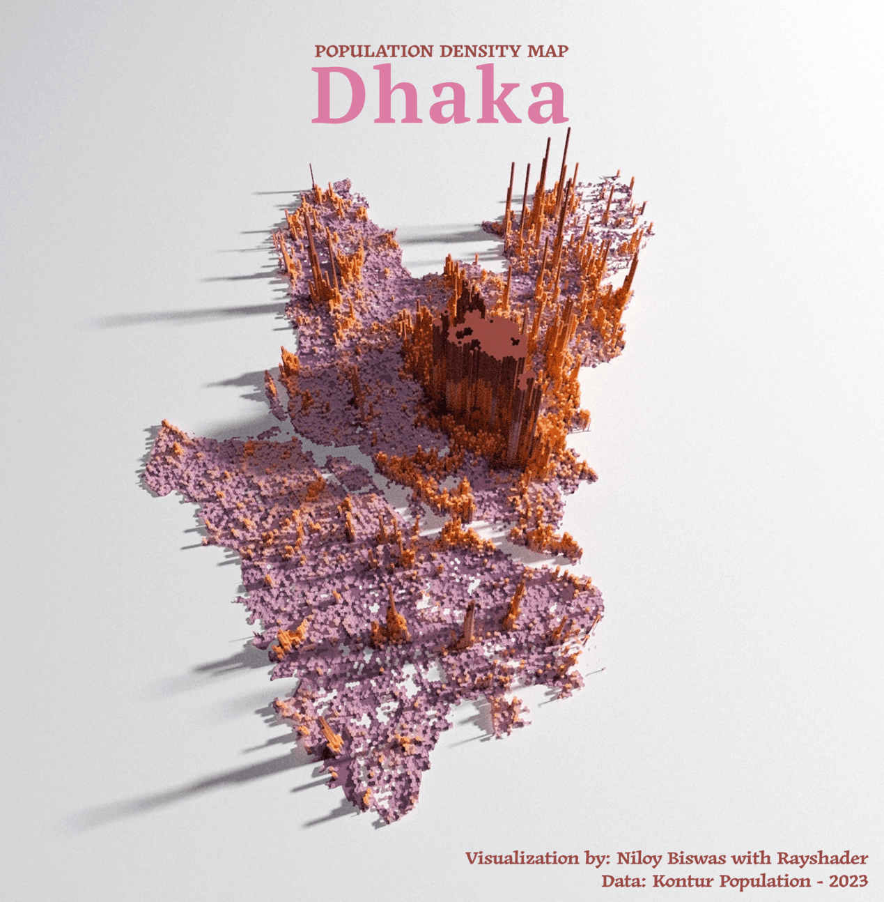
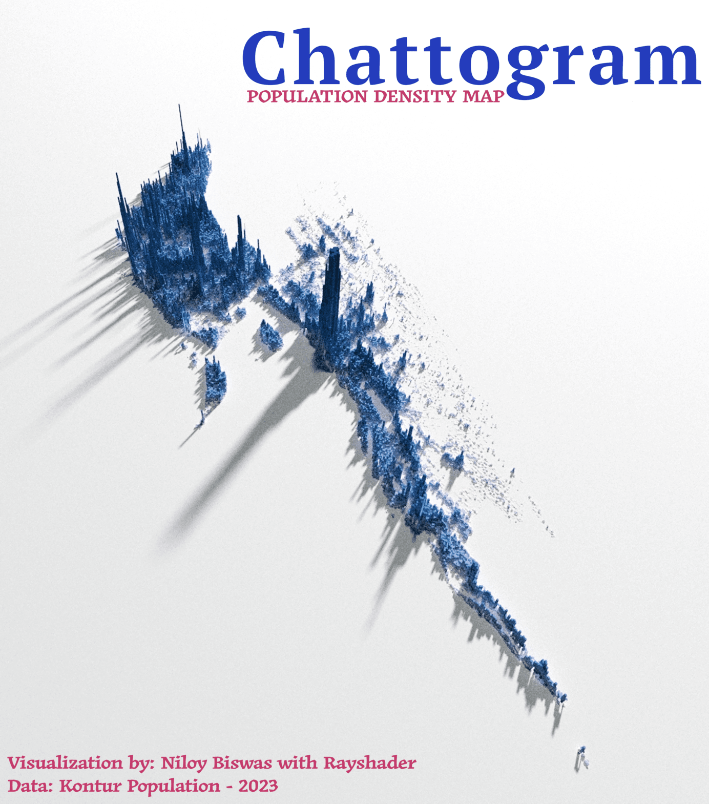

Lets embarked on a journey of visual storytelling.
💡 Discoveries on this global exploration:
Bangladesh - With a population exceeding 160 million, the nation pulsates with vitality. Explore the intricacies of this densely populated haven, each region telling a unique story through the sheer density of its inhabitants.

Dhaka - As the bustling capital of Bangladesh, with a population of more than 44 million people, the city exudes life. Immerse yourself in the complexities of this densely populated metropolis, where each district tells a unique tale due to the sheer density of its residents.

Chittagong Division - Nestled in the scenic landscapes of Bangladesh, with a population exceeding 5.5 million, Chittagong Division resonates with diverse energy. Situated near the breathtaking Cox's Bazar, home to the world's longest sea beach, explore the vibrant tapestry of this densely populated region.

With a population of over 1.3 billion people, India pulsates with dynamic diversity. Explore the complexities of this densely inhabited refuge, where each state tells its own story via the sheer density of its population.
Sri Lanka's with a population over 22 million people, is vividly brought to life in our 3D Population Density Map. The map highlights key areas like Colombo, with its dense urban population, and contrasts them with the more sparsely populated rural regions, offering a comprehensive view of demographic distribution across the island.

Nepal's population, exceeding 29 million, is dynamically illustrated in our 3D Population Density Map. This map accentuates major areas such as Kathmandu, showcasing its densely populated urban landscape, and juxtaposes it with the less populated, remote mountainous and rural areas, providing a detailed perspective on the population spread throughout the country.

Bhutan, with a population of about 750K, is vividly captured in our 3D Population Density Map. The map showcases the stark contrast between densely populated regions and the expansive, sparsely inhabited Himalayan areas, offering a clear and comprehensive view of how the population is distributed across this tranquil mountain nation.

Myanmar, with a population exceeding 54 million, is effectively illustrated in our 3D Population Density Map. This map highlights the dense urban areas contrasted with less populated rural regions, providing an extensive view of the diverse population distribution throughout the country.